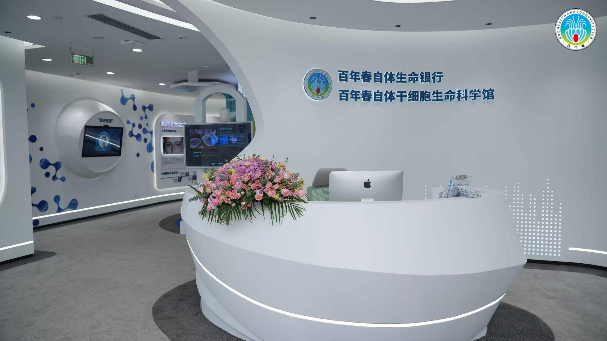
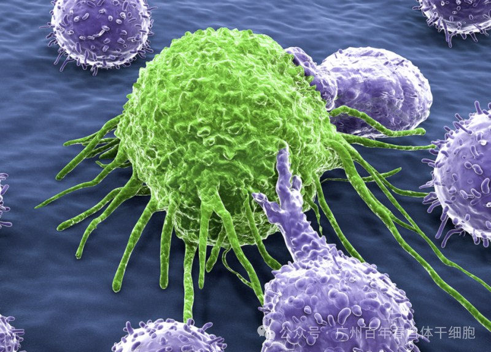
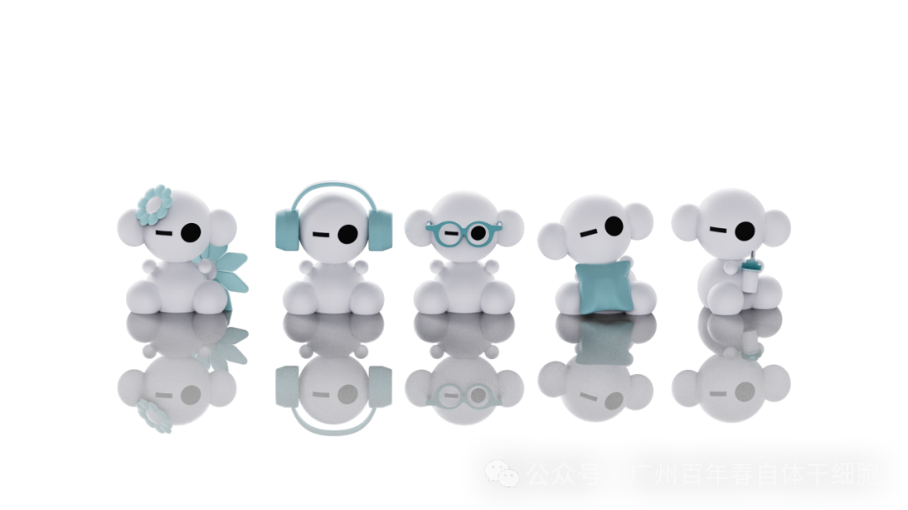
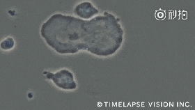

别等身体亮红灯！百年春自体干细胞，为您定制细胞级抗衰防线
2026-03-04

About Us
关于百年春
#自体NK免疫细胞疗法
NK细胞就像我们身体里的巡逻警察，每天24小时在血液和组织里巡逻，专门抓坏蛋——包括癌细胞、病毒感染的细胞等。它们最大的特点是：
反应快：看到异常细胞能立即行动，不像其他免疫细胞需要请示上级
不挑食：能识别多种异常细胞，不需要特定"身份证"
安全可靠：很少误伤正常细胞

癌症患者

病毒感染者

NK细胞是我们体内的病毒清道夫，它能精准识别并消灭被病毒感染的细胞，同时阻止病毒继续复制扩散。这种天然防御机制对保护肝脏特别重要，能有效减轻病毒造成的损伤，防止病情恶化。
目前，NK细胞疗法已被证实对乙肝、HPV和流感等多种病毒都有效果。最令人振奋的是，最新临床数据显示，乙肝大三阳患者在接受NK细胞治疗后，体内病毒量大幅降低了98.5%！这意味着原本需要长期服药的乙肝患者，现在有了一个能显著控制病毒的新选择。
免疫力低下者
老年衰弱者
NK细胞就像身体里的清道夫，能精准清除病变和老化的细胞，帮助减轻慢性炎症，增强免疫力。这种细胞大扫除不仅能改善整体健康状态，还能降低心血管病、老年痴呆等疾病的风险。上海长征医院的临床研究显示：32位接受NK细胞静脉输注的受试者中，一半人体内衰老的免疫细胞被有效清除，同时免疫细胞上的衰老标志物减少了20%-30%——相当于给免疫系统做了一次深度保养，让身体重新焕发活力！
40岁以上抗衰老需求者
NK细胞不仅能清除衰老细胞，还能像免疫教练一样激活其他免疫细胞，全面提升身体的防御能力。这种双重作用可以显著降低癌症发生风险。北京协和医院的重要研究发现：通过回输NK细胞，中老年人的免疫功能可以恢复到年轻时的80%水平，相当于让免疫系统重返青春！这项突破性研究为预防癌症和延缓衰老提供了全新思路。

慢性疾病患者
NK细胞在治疗自身免疫性疾病方面展现出独特的免疫调节师作用。对于类风湿性关节炎和红斑狼疮患者，NK细胞能够：
1. 精准识别过度活跃的免疫细胞
2. 释放调节性细胞因子平衡免疫反应
3. 选择性清除功能异常的免疫细胞
4. 重建健康的免疫微环境
这种治疗方式不同于传统免疫抑制剂，它不会全面压制免疫系统，而是通过智能调节恢复免疫平衡。临床数据显示，NK细胞治疗能显著改善患者的关节功能和生活质量，同时降低疾病复发率，为自身免疫性疾病治疗提供了更安全有效的新选择。
术后康复患者
手术后，身体就像电量不足的手机，免疫力会暂时下降。这时输入高活性的NK细胞，就像给手机快速充电：
1. 快速提升免疫力
2. 帮助预防感染
3. 促进伤口愈合
4. 加快体力恢复
这种治疗就像给术后的身体装了个加速器，让康复过程变得更顺利、更快速。特别适合大手术后需要快速恢复的患者。
慢性炎症患者
长期慢性炎症如胃炎可能增加患癌风险，而NK细胞就像身体的消防员，能有效控制炎症发展。日韩联合研究发现，93%接受NK细胞治疗的人在三个月后都感受到了明显改善，有的睡眠变好了，有的肠胃更舒服了，有的不再容易感冒，这种疗法通过调节炎症因子分泌，既缓解了不适症状，又从根源上降低了炎症引发癌变的风险。
癌症高风险人群
对于长期吸烟喝酒、经常熬夜、有癌症家族史或身体长结节的高危人群来说，患癌风险会比普通人高很多。NK细胞就像身体里的抗癌卫士，能够及时清除那些发生异常变化的细胞，把癌症扼杀在萌芽阶段。国际权威杂志《自然》最新研究发现，肺结节会不会癌变，关键要看免疫系统能不能hold住。通过定期回输NK细胞，就像给免疫系统加buff，不仅能控制结节发展，甚至有可能让结节缩小或消失，有效预防癌症发生。

#结语NK细胞的十大适用人群
●癌症患者
●病毒感染者（乙肝、HPV、甲流病毒）
●免疫力低下者
●老年衰弱者
●40岁以上有抗衰老需求者
●亚健康者（疲劳乏力、睡眠质量、生活质量低下）
●慢性疾病患者
●术后康复患者
●慢性炎症患者
●癌症高风险人群
更多关于细胞治疗的相关问题，可通过下方详细了解>>